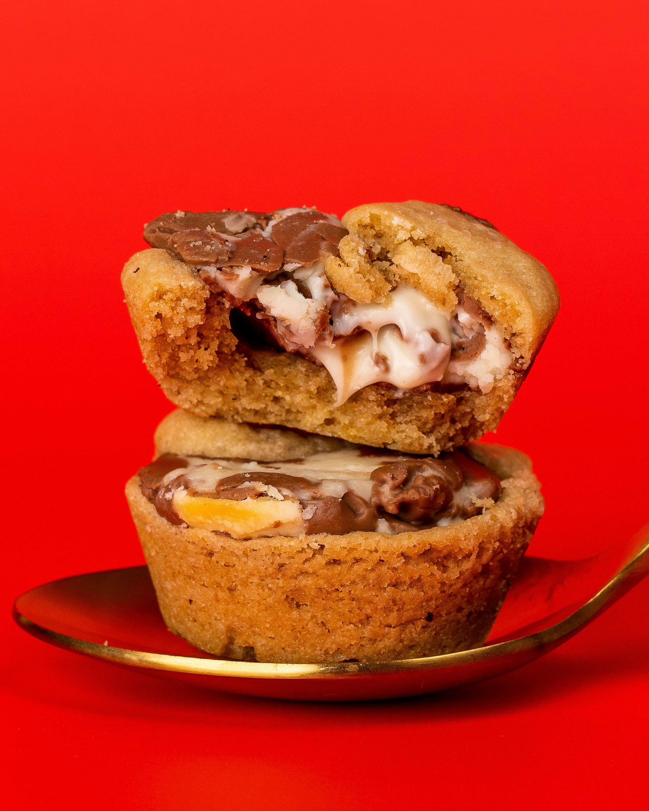

Home
Cookie Dough Cupcakes

Description
This recipe is a standard cupcake that contains cookie dough on the
inside of it. It takes about 2 hours to cook and will create two
dozen cupcakes to enjoy.
Ingredients
- 1 1/2 cups flour
- 1/4 teaspoon baking soda
- 1/4 teaspoon sea salt
- 1/2 cup softened butter
- 1/4 cup white sugar
- 1/2 cup brown sugar
- 4 eggs
- 2 teaspoons vanilla extract
- 1 cup mini chocolate chips
- 1 box (18.25 ounces) yellow cake mix
- 1 1/3 cups water
- 1/3 cup canola oil